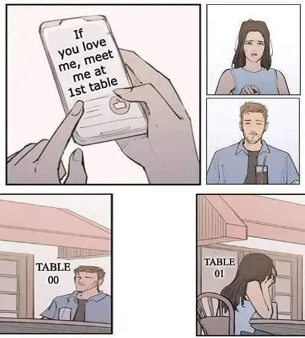

مطالب بیشتر در مورد رشتهها
تفاوت دابل و سینگل کوتیشن
توی پایتون تقریبا هیچ فرقی نمیکنه که از کدوم کوتیشن مارک استفاده میکنیم. تنها تفاوتی که استفاده از تک کوتیشن و دابل کوتیشن در پایتون دارن اینه که اگر داخل متن از دابل کوتیشن هم استفاده شده از تک کوتیشن استفاده میکنیم و برعکس:
# Using double quotation mark
some_text = "That is Alice's book!"
# Using single quotation mark
another_text = 'He said: "Can you help me with this python code?"'
استفاده از سه تا کوتیشن مارک
اگر از سه تا کوتیشن مارک (چه تک و چه جفت) استفاده کنیم، رشته دقیقا به همون شکل ذخیره میشه، و خط جدید و فاصلهها حفظ میشن، از این نوع رشته برای مواقعی که میخوایم توی چند خط متن رو بنویسیم استفاده میشه، همچنین برای داکیومنت کردن فانکشنها، کلاسها و ... هم استفاده میشه که بعدا خواهیم دید
multiline_text = '''Hello,
Let's learn some python together!
and have Fun.'''
Escape characters یا کاراکترهای فرار
کاراکتر بکاسلش
\
همراه با یک سری کاراکترها بعدش
معانی خاصی توی رشتهها داره که لیست مهمترین مواردش رو با مثال اینجا میگذارم:
\<خط جدید>:
هم بکاسلش و هم خط جدید نادیده گرفته میشه:
text = "Hello,\
World!"
print(text)
#>> Hello,World!
\\:
برای نوشتن خود کاراکتر بکاسلش استفاده میشه:
text = "old\\new books!"
print(text)
#>> old\new books!
\'
و
\":
برای گذاشتن quotation mark:
text = 'Let\'s go to the cinema together!'
print(text)
#>> Let's go to the cinema together!
\n:
برای رفتن به خط جدید (new line):
text = "Hi\nBye"
print(text)
#>> Hi
#>> Bye
\r:
به اول همون خطی که هستیم میره (مثل دستگاه چاپ قدیم که کارتریج رو میکشیدن اول خط):
text = "Hi\rBye"
print(text)
#>> Bye
\t:
به اندازه یک Tab فاصله میگذاره:
text = "Alice:\t500\nJoe:\t600"
print(text)
#>> Alice: 500
#>> Joe: 600
\{Name}:
به جای Name اسم کاراکتر رو از
دیتابیس unicode
بگذارید:
text = "I \N{HEAVY BLACK HEART} you!"
print(text)
#>> I ❤ you!
\uxxxx
به جای xxxx کد هگزادسیمال کاراکتر unicode رو بگذارید:
text = "I \u2764 you\u0021"
print(text)
#>> I ❤ you!
raw string یا رشتهی خام!
اگر توی یک str قبل از علامت کوتیشن یک حرف r بگذاریم اون رشته دیگه فرمت نمشه و به صورت خام میمونه، یعنی دیگه کاراکترهای فرار و ... بیتاثیر هستن. از این کار معمولا برای آدرس فایلها، جایی که میخوایم بکاسلش رو تو استرینگ وارد کنیم و ... استفاده میشه:
text = r"We use \n to go to a new line. {5 + 5} :)"
print(text)
#>> We use \n to go to a new line. {5 + 5} :)
متدهای رشتهها (string methods)
اول خیلی مختصر بگم متد فانکشنی (تابعی) هست که داخل یه کلاس تعریف میشه و یا کاری روی اون آبجکت انجام میده یا مقداری رو برمیگردونه. مثلا یه متد ممکنه یه متن رو تغییرش بده، و یه متد دیگه ممکنه مقدار رو به ما بده. حالا یه سری متدهایی هست که میتونیم ازشون استفاده کنیم تا کاری روی نوع دادهی str انجام بدیم. متدهای مهم رشتهها رو با مثال اینجا میارم:
str.upper()
و
str.lower():
یه کپی از string رو برمیگردونه که تمام کاراکترهاش رو تبدیل به حروف بزرگ/کوچک کرده:
text = "hello World!"
# all characters to uppercase
new_text = text.upper()
print(new_text)
# all characters to lower case
new_text = text.lower()
print(new_text)
#>> HELLO WORLD!
#>> hello world!
str.title():
یه کپی از رشته رو برمیگردونه که اولین حرف هر کلمه حرف بزرگه،
و بقیه حروف کوچیک هستن:
text = "Hello, from PyCharm!"
# first word of each character is uppercase, the rest is lower case
new_text = text.title() # from -> From, PyCharm -> Pycharm
print(new_text)
#>> Hello, From Pycharm!
str.split(sep, maxsplit):
یک رشتهی دیگه (sep) رو به عنوان جداکننده میگیره و رشته رو از جاهایی که اون جداکننده هست قطع میکنه
و یه لیست از این رشتههای بریده شده برمیگردونه (لیست رو یه کم پایینتر گفتم)
اگر مقدار maxsplit هم داده بشه فقط به اون تعداد قطع میکنه و بقیه رو نادیده میگیره.
همچنین اگر جداکننده هم وارد نشه، فاصلهی خالی رو به عنوان جداکننده در نظر میگیره.
(امیدوارم خیلی پیچیده نشده باشه!):
today = "1402/07/22"
# splitting the date where / appears
split_text = today.split('/')
print(split_text)
weird_text = "hello-how-are-you"
# only splitting the first 2 words
split_text = weird_text.split('-', 2)
print(split_text)
text = "I like programming"
# if separator is not given:
split_text = text.split()
print(split_text)
#>> ['1402', '07', '22']
#>> ['hello', 'how', 'are-you']
#>> ['I', 'like', 'programming']
str.strip():
یه کپی از رشته برمیگردنه و فاصلههای اول و آخر متن رو حذف میکنه:
text = " hello, world!"
print(text)
text = text.strip()
print(text)
#>> hello, world!
#>> hello, world!
str.replace(old, new):
این متد دو تا رشته میگیره، یکی قدیمی و یکی جدید. هر جا مقدار قدیمی تو متنمون بود
با مقدار جدید عوض میکنه و متن جدید رو برمیگردونه.
text = "My plants are growing, I like my plants."
text = text.replace('plants', 'ears') # replaces plants with ears
print(text)
#>> My ears are growing, I like my ears.
str.join(iterable):
یه لیست از رشتهها میگیره و همه رو به هم میچسپونه و بینشون متنی که دادیم رو قرار میده.
متن جدید رو برمیگردونه.
مثلا تو کد زیر یه لیست از اسمها رو بهش دادیم و با and جوین کردیم.
یعنی یه رشته جدید بهمون میده که بین همهی اسمها and گذاشته:
names = ["Alice", "Alex", "John", "Joe"]
text = " and ".join(names)
print(text)
#>> Alice and Alex and John and Joe
str.count(sub):
تعداد تکرار sub رو توی رشته برمیگردونه.
مثلا تو کد زیر میشمره که چند بار "if" تکرار شده:
text = "if and only if you do your work!"
print(text.count('if')) # counts the number of "if"s in the string
#>> 2
str.find(sub):
ایندکس جایی که اولین بار رشتهی sub توی متنمون اومده رو برمیگردونه.
تو مثال زیر Phone تو دوازدهمین کاراکتره (فاصلهها هم حسابن):
text = "where is my phone?"
print(text.find("phone"))
#>> 12
حواستون باشه که تو برنامهنویسی (تقریبا) همیشه شمارش از صفر شروع میشه.
رشتهها متدهای بیشتری دارن، اینا مهمهاشون بودن. اگر متد دیگهای رو خواستید به اینجا اضافه کنم تلگرام پیام بدید. بهترین روش یادگرفتنشون اینه که باهاشون بازی کنید. داکیومنتهاش رو بخونید، ببینید چه متدهایی دارن و خودتون امتحانشون کنید.
گرفتن مقدار از لیستها، رشتهها و ...
برای گرفتن مقدار از یه لیست، یه رشته، یا هر نوع iterable دیگهای توی پایتون
از علامت
[]
استفاده میکنیم.
اگر داخل براکتها یک عدد بگذاریم مقدار اون iterable رو تو اون ایندکس بهمون میده.
مثلا توی کد زیر چهارمین کاراکتر رشته رو میخوایم بگیریم، پس توی براکت 3 رو مینویسیم
(شمارش از صفر شروع میشه):
name = "Stephen Hawking"
print(name[3])
#>> p
اگر بخوایم از یه مقدار تا یه مقدار دیگه رو بگیریم، بین دو مقدار یه علامت ":" میگذاریم. اینطوری از اولین عدد تا آخرین عدد (بجز خود آخری) رو بهمون میده. اگر عدد اولی رو خالی بگذاریم از اول لیست، و اگر عدد دوم رو خالی بگذاریم تا آخر لیست رو برمیگردونه:
text = "Welcome"
print(text[1:3])
print(text[:5])
print(text[3:])
#>> el
#>> Welco
#>> come
Iterables یا اشیاء قابل شمارش
در پایتون اشیایی که قابل شمارش هستن رو Iterable میگن، چیزهایی که تعداد قابل شمارشی از اشیاء دیگه رو تو خودشون نگه میدارن و میشه با یه حلقه for روی هرکدوم عملیاتی انجام داد (چیز ترسناکی نیست، کلا یه مجموعه از چیزای دیگهست) مثلا string هم یه Iterable هست که مجموعهای از کاراکترهاست.
Iterator های خود پایتون شامل list و tuple و set و dict میشن، که یه مثال از هرکدوم رو میارم:
-
list:
لیستها با استفاده از براکت
[]ساخته میشن. لیستها هم قابل تغییر هستن (یعنی میشه یکی از مقدارهاشون رو بعدا تغییر داد) و هم مرتب هستن (یعنی ترتیب توشون مهمه)
example = [1, 5, False, "hi"] # this is a list
-
tuple:
تاپلها با استفاده از پرانتز
()ساخته میشن. تاپلها قابل تغییر نیستن، یعنی وقتی ساخته شدن دیگه نمیشه یکی از مقادیرشون رو تغییر داد، و مرتب هستن (ترتیب توشون مهمه). اگر یه تاپل فقط با یک عضو بخوایم بسازیم باید یه کاما هم بگذاریم.
example = (1, 8, "hello", 2.5) # this is a tuple
single_tuple = (4,) # a tuple with only one object in it
-
dict:
دیکشنریها با استفاده از آکلاد
{}ساخته میشن. دیکشنریها به صورت کلید و مقدار هستن که کلید و مقدار با استفاده از یه کالن (دو نقطه :) از هم جدا میشن، بعدا دیکشنریها رو میخونیم. دیکشنریها قابل تغییر هستن، و قبلا مرتب نبودن (یعنی ترتیب توشون مهم نبود) ولی تو نسخههای جدید پایتون مرتب هستن.
# this is a dictionary witch has {key: value} pairs
example = {"color": "red", "shape": "circle", "width": 5, "filled": False}
-
set:
ستها مثل دیکشنری با آکلاد
{}ساخته میشن ول به صورت کلید و مقدار نیستن و مثلا مثل تاپل مقدار میگیرن. ستها نه قابل تغییر هستن و نه ترتیب دارن. همچنین ستها مقدار تکراری نمیتونن داشته باشن و همهی مقدارهای داخلش یکتا هستن.
مثلا تو کد پایین فقط یکی از مقدارهای "blue" داخل ست میمونه، و چون مرتب نیست، هربار که پرینت کنید یه نتیجه متفاوت چاپ میشه:
colors = {"blue", "red", "green", "yellow","blue"}
# only one of the "blue" values will stay in the set:
print(colors)
#>> {'yellow', 'blue', 'green', 'red'}
list, لیست
لیستها همونطور که گفتیم مجموعهای از چیزهای دیگه هستن (حتی یه لیست دیگه). برای دسترسی به یک آیتم از لیست از ایندکس اون مقدار داخل براکت استفاده میکنیم:
example = [5.5, 8, "ali amiri XD", False, [1, 2, "hi"]]
# -> third item in the list
print(example[2])
# -> fifth item is a list, and we get the third item from that list
print(example[4][2])
#>> ali amiri XD
#>> hi
میتونیم از آخر لیست (یا هر Iterable دیگهای) به اول بشماریم. برای این کار از ایندکس منفی استفاده میکنیم. ایندکس -1 یعنی آخرین آیتم لیست، -2 یعنی یکی به آخر و غیره:
fruits = ["apple", "banana", "peach", "narangi"]
print(fruits[-1])
#>> narangi
برای اینکه یه قسمت از لیست رو برگردونیم از دونقطه (همونطور که تو رشتهها گفتم) استفاده میکنیم:
names = ["Aurora", "Evelyn", "Grace", "Henry", "Jade", "Ivy"]
print(names[1:3]) # prints the names at indexes 1 and 2
#>> ['Evelyn', 'Grace']
متدهای لیستها (list methods)